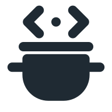

The xoong pot, in the Mist system
The pot you chose: lid, knob, two ears, the steam as < > brackets, and the clay body. Drawn the Mist way: ink 2px round stroke on the 24 grid, on the Mist tint tile (#E8F1FC, radius 16). The wordmark is lowercase xoong, drawn with the same round stroke, so it never depends on a font.
Before and after

Lockups
 xoong-lockup.svg · on whiteon Mist grey
xoong-lockup.svg · on whiteon Mist grey xoong-lockup-dark.svg · on night
xoong-lockup-dark.svg · on night xoong-lockup-stacked.svg
xoong-lockup-stacked.svgMark, glyph, wordmark
xoong-mark.svg · app icon
xoong-glyph.svg · currentColorSmall sizes
 16 · simple24 · simple324864lockup 28px
16 · simple24 · simple324864lockup 28pxAt 24 px and below the steam brackets would merge into a blob, so the small mark keeps only lid, body and ears (xoong-mark-small.svg, also favicon.svg and favicon-16.png). From 32 px the full mark is used.
Clear space and do / do not
- Use the tint tile on white or Mist grey, and on night.
- Clay is for the pot only; the UI accent is the Mist blue.
- Use the simple mark at 24 px and below.
- Recolour the pot, the tile or the wordmark.
- Stretch, rotate or add a shadow.
- Put the lockup on a busy picture.
do not stretchdo not recolourdo not rotateFiles
SVG
xoong-lockup.svg xoong-lockup-dark.svg xoong-lockup-stacked.svg xoong-mark.svg xoong-glyph.svg xoong-wordmark.svg favicon.svg
PNG
favicon-32.png favicon-48.png apple-touch-icon.png icon-192.png icon-512.png social-card.png (1200 x 630)
Rules (from Rainlet)
Mist tint tile #E8F1FC, ink #1F2A33, clay #DF8A6A for the pot only; the UI keeps the one Mist blue #0B63CE. No gradients. Smallest: tile 16 px, lockup 20 px tall, wordmark 12 px tall. Do not recolour, stretch or rotate.